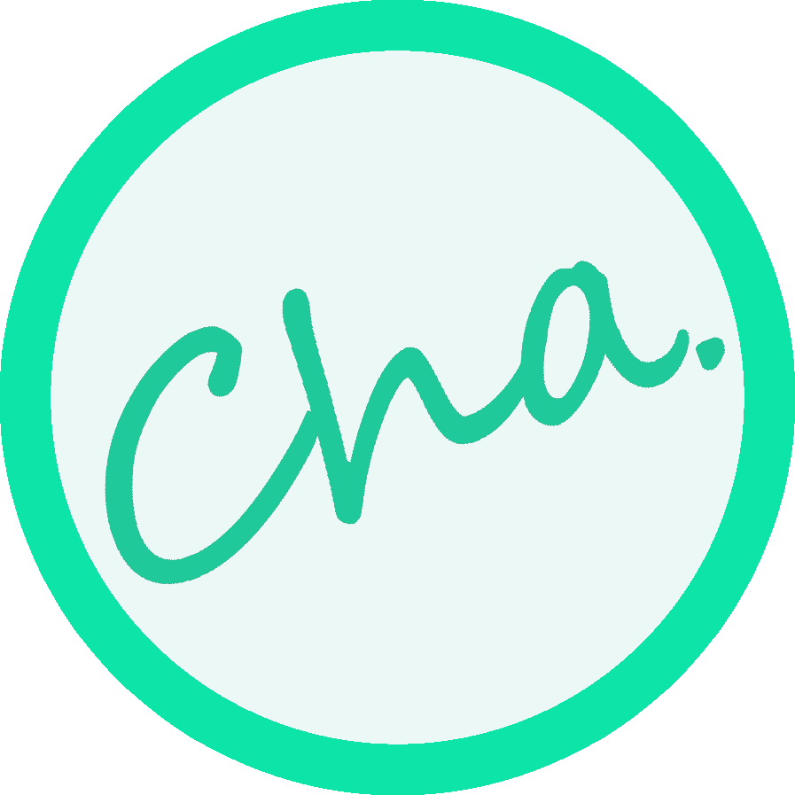

En este post intentaré explicar que son, como funcionan y para que sirven las criptomonedas de la forma más simple y fácil que pueda. Tomaré como ejemplo la Chaucha, nuestra criptomoneda, y utilizaré una metáfora de una manzana para explicar todo el concepto, para que sea más fácil de entender.

Esto es una manzana
¿Qué es una criptomoneda?
Imagina que tienes una manzana. Tú puedes tocar y oler la manzana, la puedes guardar en el refrigerador y puedes venderla.
Una criptomoneda es una manzana que no puedes tocar ni ver, pero que al mismo tiempo la puedes almacenar y vender. Es como una manzana invisible, pero que cumple con todas las demas caracteristicas de una manzana.
Las criptomonedas se almacenan en monederos electrónicos (Wallets), que tienen una dirección en donde te pueden enviar monedas, y una clave privada que asegura que nadie te las pueda robar. Por lo general, las direcciones de tu monedero se guardan en un archivo llamado wallet.dat, y es recomendable respaldarlo en un lugar seguro para nunca perderlo.
¿Cómo consigo criptomonedas?
Una manzana la puedes comprar o vender, te la pueden regalar, puedes hacer un trueque o puedes ir a la granja a recoger una del árbol.
Todos estos procesos en el mundo de las criptomonedas se desarrollan en una red, que almacena todas las transacciones correctas en un archivo llamado Blockchain.
Cuando tú le envías a tu mejor amigo 10 Chauchas desde tu monedero, estas monedas se van a la Red Chaucha para que la transacción se verifique, y cuando se comprueba que tus chauchas existen, que no has gastado ese monto y que la dirección de tu amigo es correcta se escribe esta transacción en el Blockchain, en donde no puede ser borrada ni modificada, y se envía a todos los usuarios de la red.
También existe un proceso llamado Mining o minado en español, en donde le entregas a la red la capacidad de cómputo de tu computador a cambio de criptomonedas. Este punto es esencial para el funcionamiento correcto de la red, ya que esta capacidad de cómputo se encarga de verificar las transacciones y generar los bloques que contiene el Blockchain.
Cabe destacar otras alternativas existentes en la actualidad, como el proceso de Proof of Stake que regala criptomonedas a usuarios que bloquean sus fondos en la red, o el sistema de Steem, que paga a los usuarios por escribir y participar en la red social Steemit.
¿Que precio tienen las criptomonedas?
Volvamos a la metáfora de la manzana. El valor comercial que tiene una manzana se basa en tres puntos escenciales:
• Las personas desean comprar o vender manzanas
• Las personas tienen manzanas o desean tener manzanas
• Existe un mercado en donde puedo ir a comprar o vender manzanas.
Si no existe alguno de esos tres puntos el valor de una manzana seria cero, pero como existe un mercado de manzanas y las personas quieren comprar o venderlas, el precio se fija dependiendo de la comercialización de ellas.
Cuando hay muchas manzanas en el mercado y nadie quiere comprarlas, el vendedor tiene que bajar el precio, si existen pocas manzanas y hay muchas personas que quieren comprarlas, el vendedor puede subir el precio, y si existe un precio que es ilógico dentro del mercado (por ejemplo 100 dolares por manzana), nadie va a querer participar en ese mercado.
En el mundo de las criptomonedas existen mercados establecidos, que se llaman exchanges. En estos mercados puedes comprar y vender criptomonedas interactuando con las órdenes de compra y venta.
Una orden de compra significa que alguien quiere comprar una cantidad especifica de criptomonedas a un valor especifico, y una orden de venta es lo contrario, significa que una persona quiere vender criptomonedas a un precio distinto.
Si tú quieres vender manzanas, siempre vas a querer venderlas al mayor precio posible, y al contrario, si tú quieres comprar manzanas, siempre vas a querer comprarlas al menor precio posible.
Por esto, el precio de mercado de una criptomoneda se posiciona en el lugar en donde se junta la orden de compra más cara y la orden de venta más barata.
Cuando las personas compran o venden criptomonedas en el mercado, las ordenes van desapareciendo, y esto hace que se mueva el precio. Mientras mas cambios existan en las ordenes de compra y venta, mas volátil será ese mercado.
2017 - César Vásquez C
Con apoyo de Camilo Castro e Indexar